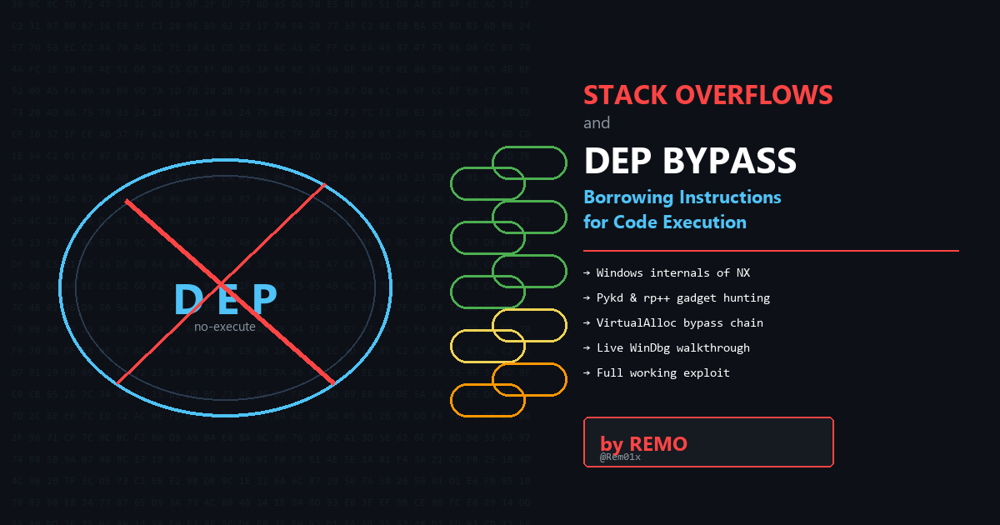

I'm SadlyRemo, a penetration tester working Active Directory, web, code review, and mobile. This is where I document the breaks.
CRTE · CRTP · CRTO · eWPTX · eCPPT · eMAPT · ex-HTB Top 5 Egypt
Field notes from the offensive edge, Active Directory, Windows internals, and exploit development, written the way a path leads to a gate: one deliberate step at a time.
I'm SadlyRemo, a penetration tester working Active Directory, web, code review, and mobile. This is where I document the breaks.
CRTE · CRTP · CRTO · eWPTX · eCPPT · eMAPT · ex-HTB Top 5 Egypt
Machines, chains, and challenges, from initial foothold to the flag.
 Exploit Dev
Exploit DevStructured Exception Handler overwrites in Sync Breeze, walked from the first crash through to a stable shell in WinDbg.
 Exploit Dev
Exploit DevWhen your buffer is too small, hunt the egg. Building a Windows egghunter and staging a second-stage payload.

Exploit DevData Execution Prevention meets return-oriented programming, chaining gadgets to flip memory executable.
 Windows
WindowsSilver tickets, MSSQL abuse, and NTLM relaying across a hardened Active Directory estate.
 Linux
LinuxA Squid proxy pinhole into the internal network, a PaperCut CVE, and a SUID bash to root.
 Windows
WindowsADCS ESC4, gMSA extraction, and password spraying woven into one clean domain compromise.
Every category is a district of the village, enter through its torii.
A ground-up path through modern stack exploitation on Windows, read in order, or drop into any step.